공조냉동기계기사(구) (2013-08-18 기출문제)
1과목: 기계열역학
1. 온도 600℃의 고온 열원에서 열을 받고, 온도 150℃의 저온 열원에 방열하면서 5.5kW의 출력을 내는 카르노 기관이 있다면 이 기관의 공급 열량은?
- 20.2 kW
- 14.3 kW
- 12.5 kW
- 10.7 kW
(정답률: 61%)
2. 다음은 증기사이클의 P-V 선도이다. 이는 어떤 종류의 사이클인가?
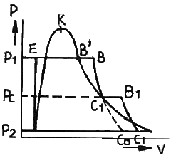
- 재생사이클
- 재생재열사이클
- 재열사이클
- 급수가열사이클
(정답률: 62%)

3. 체적 2500 L인 탱크에 압력 294 kPa, 온도 10℃의 공기가 들어 있다. 이 공기를 80℃까지 가열하는데 필요한 열량은? (단, 공기의 기체상수 R=0.287 kJ./kgㆍK, 정적비열 CV=0.717 kJ/kgㆍK 이다.)
- 약 408 kJ
- 약 432 kJ
- 약 454 kJ
- 약 469 kJ
(정답률: 51%)
4. 시스템의 열역학적 상태를 기술하는데 열역학적 상태량(또는 성질)이 사용된다. 다음 중 열역학적 상태량으로 올바르게 짝지어진 것은?
- 열, 일
- 엔탈피, 엔트로피
- 열, 엔탈피
- 일, 엔트로피
(정답률: 69%)
5. 초기압력 0.5 MPa, 온도 207℃ 상태인 공기 4 kg이 정압과정으로 체적이 절반으로 줄었을 때의 열전달량은 약 얼마인가? (단, 공기는 이상기체로 가정하고, 비열비는 1.4, 기체상수는 287 J/kgㆍK 이다.)
- -240 kJ
- -864 kJ
- -482 kJ
- -964 kJ
(정답률: 36%)
6. 14.33 W의 전등을 매일 7시간 사용하는 집이 있다. 1개월(30일)동안 몇 kJ의 에너지를 사용하는가?
- 10830 kJ
- 15020 kJ
- 17.420 kJ
- 10.840 kJ
(정답률: 71%)
7. 다음 중 정압연소 가스터빈의 표준 사이클이라 할 수 있는 것은?
- 랭킨 사이클
- 오토 사이클
- 디젤 사이클
- 브레이턴 사이클
(정답률: 54%)
8. 견고한 단열 용기 안에 온도와 압력이 같은 이상기체 산소 1kmol과 이상기체 질소 2 kmol이 얇은 막으로 나뉘어져 있다. 막이 터져 두 기체가 혼합될 경우 이 시스템의 엔트로피의 변화는?
- 변화가 없다.
- 증가한다.
- 감소한다.
- 증가한 후 감소한다.
(정답률: 58%)
9. 체적이 0.5 m3인 밀폐 압력용기 속에 이상기체가 들어 있다. 분자량이 24이고, 질량이 10 kg이라면 기체상수는 몇 kNㆍm/kgㆍK인가? (단, 일반기체상수는 8.313 kJ/kmolㆍK이다.)
- 0.3635
- 0.3464
- 0.3767
- 0.3237
(정답률: 72%)
10. 압력 250 kPa, 체적 0.35m3의 공기가 일정 압력 하에서 팽창하여, 체적이 0.5m3로 되었다. 이때의 내부에너지의 증가가 93.9 kJ이었다면, 팽창에 필요한 열량은 약 몇 kJ 인가?
- 43.8
- 56.4
- 131.4
- 175.2
(정답률: 60%)
11. 냉동기에서 0℃의 물로 0℃의 얼음 2 ton을 만드는데 50 kWh의 일이 소요된다면 이 냉동기의 성능계수는? (단, 얼음의 융해잠열은 334.94 kJ/kg 이다.)
- 1.⑤
- 2.32
- 2.67
- 3.72
(정답률: 61%)
12. 단열 밀폐된 실내에서 [A]의 경우는 냉장고 문을 닫고, [B]의 경우는 냉장고 문을 연채 냉장고를 작동시켰을 때 실내온도의 변화는?
- [A]는 실내온도 상승, [B]는 실내온도 변화 없음
- [A]는 실내온도 변화 없음, [B]는 실내온도 하강
- [A], [B] 모두 실내온도가 상승
- [A]는 실내온도 상승, [B]는 실내온도 하강
(정답률: 62%)
13. 이상기체의 폴리트로픽 과정을 일반적으로 Pυn=C로 표현할 때 n에 따른 관점을 설명한 것으로 맞는 것은? (단, C는 상수 이다.)
- n=0 이면 등온과정
- n=1 이면 정압과정
- n=1.5 이면 등온과정
- n=k (비열비)이면 가역단열과정
(정답률: 74%)
14. 준평형 정적과정을 거치는 시스템에 대한 열전달량은? (단, 운동에너지와 위치에너지의 변화는 무시한다.)
- 0 이다.
- 내부에너지 변화량과 같다.
- 이루어진 일량과 같다.
- 엔탈피 변화량과 같다.
(정답률: 66%)
15. 온도 90℃의 물이 일정 압력 하에서 냉각되어 30℃가 되고 이때 25℃의 주위로 500 kJ의 열이 전달된다. 주위의 엔트로피 증가량은 얼마인가?
- 1.50 kJ/K
- 1.68 kJ/K
- 8.33 kJ/℃
- 20.0 kJ/℃
(정답률: 54%)
16. 온도가 350 K인 공기의 압력이 0.3 MPa, 체적이 0.3 m3, 엔탈피가 100 kJ 이다. 이 공기의 내부에너지는?
- 1 kJ
- 10 kJ
- 15 kJ
- 100 kJ
(정답률: 63%)
17. 단열 과정으로 25℃의 물과 50℃의 물이 혼합되어 열평형을 이루었다면, 다음 사항 중 올바른 것은?
- 열평형에 도달되었으므로 엔트로피의 변화가 없다.
- 전계의 엔트로피는 증가한다.
- 전계의 엔트로피는 감소한다.
- 온도가 높은 쪽의 엔트로피가 증가한다.
(정답률: 56%)
18. 랭킨 사이클의 각 점에서 작동유체의 엔탈피가 다음과 같다면 열효율은 약 얼마인가?
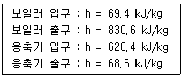
- 26.7%
- 28.9%
- 30.2%
- 32.4%
(정답률: 55%)
19. 가스 터빈 엔진의 열효율 대한 설명 중 잘못된 것은?
- 압축기 전후의 압력비가 증가할수록 열효율이 증가한다.
- 터빈 입구의 온도가 높을수록 열효율이 증가하나 고온에 견딜 수 있는 터빈 블레이드 개발이 요구된다.
- 역일비는 터빈 일에 대한 압축 일의 비로 정의되며 이것이 높을수록 열효율이 높아진다.
- 가스 터빈 엔진은 증기 터빈 원동소와 결합된 복합 시스템을 구성하여 열효율을 높일 수 있다.
(정답률: 37%)
20. 다음 중 열역학 제 1법칙과 관계가 가장 먼 것은?
- 밀폐계가 임의의 사이클을 이룰 때 열전달의 합은 이루어진 일의 총합과 같다.
- 열은 본질적으로 일과 같은 에너지의 일종으로서 일을 열로 변환할 수 있다.
- 어떤 계가 임의의 사이클을 겪는 동안 그 사이클에 따라 열을 적분한 것이 그 사이클에 따라서 일을 적분한 것에 비례한댜.
- 두 물체가 제 3의 물체가 온도의 동등성을 가질 때는 두 물체도 역시 서로 온도의 동등성을 갖는다.
(정답률: 64%)
2과목: 냉동공학
21. 압력-온도선도(듀링선도)를 이용하여 나타내는 냉동사이클은?
- 증기 압축식 냉동기
- 원심식 냉동기
- 스크롤식 냉동기
- 흡수식 냉동기
(정답률: 71%)
22. 다음 그림과 같은 냉동실 벽의 통과율(kcal/m2h℃은 액 얼마인가? (단, 공기막 계수는 실내벽면 8 kcal/m2h℃, 외부벽면 29kcal/m2h℃ 이며, 벽의 구조에 따른 각 열전도율(σ, kcal/mh℃), 두께(mm)는 아래 그림과 같다.)
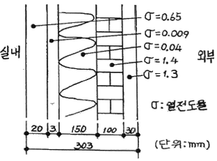
- 0.125
- 0.229
- 0.035
- 0.437
(정답률: 65%)
23. 냉동기에서 성적계수가 6.84 일 때 증발온도가 -15℃이다. 이 때 응축온도는 몇 ℃인가?
- 17.5
- 20.7
- 22.7
- 25.5
(정답률: 74%)
24. 실린더 직경 80mm, 행정 50 mm, 실린더수 6개, 회전수 1750 rpm인 왕복동식 압축기의 피스톤 압출량은 약 얼마인가?
- 158m3/h
- 168m3/h
- 178m3/h
- 188m3/h
(정답률: 53%)
25. 흡입, 압축, 토출의 3행정으로 구성되며, 밸브와 피스톤이 없어 장시간의 연속운전에 유리하고 소형으로 큰 냉동능력을 발휘하기 때문에 대형 냉동공장에 적합한 압축기는?
- 왕복식 압축기
- 스크류 압축기
- 회전식 압축기
- 원심 압축기
(정답률: 66%)
26. 열의 이동에 대한 설명으로 옳지 않은 것은?
- 고체표면과 이에 접하는 유동 유체간의 열이동을 열전달이라 한다.
- 자연계의 열이동은 비가역 현상이다.
- 열역학 제 1법칙에 따라 고온체에서 저온체로 이동한다.
- 자연계의 열이동은 엔트로피가 증가하는 방향으로 흐른다.
(정답률: 60%)
27. 냉동기유가 갖추어야할 조건으로 알맞지 않는 것은?
- 응고점이 낮고, 인화점이 높아야 한다.
- 냉매와 잘 반응하지 않아야 한다.
- 산화가 되기 쉬운 성질을 가져야 된다.
- 수분, 산분을 포함하지 않아야 된다.
(정답률: 83%)
28. 건식증발기의 일반적인 장점이라 할 수 없는 것은?
- 냉매 사용량이 아주 많아진다.
- 물회로의 유로저항이 작다.
- 냉매량 조절을 비교적 간단히 할 수 있다.
- 냉매 증기속도가 빨라 압축기로의 유화수가 좋다.
(정답률: 69%)
29. 냉동장치의 운전에 관한 설명 중 맞는 것은?
- 압축기에 액백(liquid back)현상이 일어나면 토출가스 온도가 내려가고 구동 전동기의 전류계 지시 값이 변동 한다.
- 수액기내에 냉매액을 충만시키면 증발기에서 열부하 감소에 대응하기 쉽다.
- 냉매 충전량이 부족하면 증발압력이 높게 되어 냉동능력이 저하한다.
- 냉동부하에 비해 과대한 용량의 압축기를 사용하면 저압이 높게 되고, 장치의 성적계수는 상승한다.
(정답률: 54%)
30. 어큐물레이터(accumlator)에 대한 설명으로 옳은 것은?
- 건식 증발기에 설치하여 냉매액과 증기를 분리시킨다.
- 냉매액과 증기를 분리시켜 증기만을 압축기에 보낸다.
- 분리된 증기는 다시 응축하도록 응축기로 보낸다.
- 냉매속에 흐르는 냉동유를 분리시키는 장치이다.
(정답률: 43%)
31. 온도식 자동팽창밸브의 감온통 설치방법으로 잘못된 것은?
- 증발기 출구 측 압축기로 흡입되는 곳에 설치할 것
- 흡입 관경이 20A 이하인 경우에는 관 상부에 설치할 것
- 외기의 영향을 받을 경우는 보온해 주거나 감온통 포켓을 설치할 것
- 압축기 흡입 관에 트랩이 있는 경우에는 트랩 부분에 부착할 것
(정답률: 74%)
32. 암모니아(NH3냉매의 특성 중 잘못 된 것은?
- 기준증발온도(-15℃)와 기준응축온도(30℃)에서 포화압력이 별로 높지 않으므로 냉동기 제작 및 배관에 큰 어려움이 없다.
- 암모니아수는 철 및 강을 부식시키므로 냉동기와 배관 재료로 강관을 사용할 수 없다.
- 리트머스 시험지와 반응하면 청색을 띠고, 유황 불꽃과 반응하여 흰 연기를 발생시킨다.
- 오존파괴계수(ODP)와 지구온난화계수(GWP)가 각각 0 이므로 누설에 의해 환경을 오염시킬 위험이 없다.
(정답률: 73%)
33. 소형 냉동기의 브라인 순환량이 10 kg/min이고, 출입구 온도차는 10℃이다. 압축기의 실소요 마력은 3ps일 때, 이 냉동기의 실제 성적계수는 약 얼마인가? (단, 브라인 비열은 0.8kcal/kg℃ 이다.)
- 1.8
- 2.5
- 3.2
- 4.7.
(정답률: 57%)
34. 응축기에서 냉매가스의 열이 제거되는 방법은?
- 대류와 전도
- 증발과 복사
- 승화와 휘발
- 복사와 액화
(정답률: 64%)
35. 냉동장치에 부착하는 안전장치에 관한 설명이다. 맞는 것은?
- 안전밸브는 압축기의 헤드나 고압축 수액기 등에 설치한다.
- 안전밸브의 압력이 높은 만큼 가스의 분사량이 증가하므로 규정보다 높은 압력으로 조정하는 것이 안전하다.
- 압축기가 1대일 때 고압차단 장치는 흡입밸브에 부착한다.
- 유압보호 스위치는 압축기에서 유압이 일정 압력 이상이 되었을 때 압축기를 정지시킨다.
(정답률: 54%)
36. 다음 그림은 이상적인 냉동 사이클을 나타낸 것이다. 설명이 맞지 않는 것은?
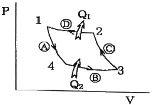
- Ⓐ 과정은 단열팽창이다.
- Ⓑ 과정은 등온압축이다.
- Ⓒ 과정은 단열압축이다.
- Ⓓ 과정은 등온압축이다.
(정답률: 73%)
37. 용량조절장치가 있는 프레온냉동장치에서 무부하(unload) 운전시 냉동유 반송을 위한 압축기의 흡입관 배관방법은?
- 압축기를 증발기 밑에 설치한다.
- 2중 수직 상승관을 사용한다.
- 수평관에 트랩을 설치한다.
- 흡입관을 가능한 길게 배관한다.
(정답률: 65%)
38. 냉동장치에서 일원 냉동사이클과 이원 냉동사이클의 가장 큰 차이점은?
- 압축기의 대수
- 증발기의 수
- 냉동장치내의 냉매 종류
- 중간냉각기의 유무
(정답률: 64%)
39. 왕복동식 압축기의 회전수를 n(rpm), 피스톤의 행정을 S(m)라 하면 피스톤의 평균속도 Vm(m/s)를 나타내는 식은?
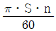
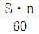
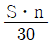
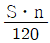
(정답률: 54%)
40. 일반적으로 급속 동결 이라하면 동결속도가 몇 cm/h 이상인 것을 말하는가?
- 0.01~0.03
- 0.⑤~0.08
- 0.1~0.3
- 0.6~2.5
(정답률: 51%)
3과목: 공기조화
41. 에어와셔(air washer)에 의해 단열 가습을 하였다. 온도변화가 아래 그림과 같을 때, 포화효율 ηs 은 얼마인가?
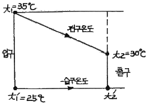
- 50%
- 60%
- 70%
- 80%
(정답률: 52%)
42. 보일러의 부속장치인 과열기가 하는 역할은?
- 온수를 포화액으로 변화시킨다.
- 포화액을 과열증기로 만든다.
- 습증기를 포화액으로 만든다.
- 포화증기를 과열증기로 만든다.
(정답률: 72%)
43. 다음 보온재 중에서 안전 사용온도가 제일 높은 것은?
- 규산칼슘
- 경질폼라버
- 탄화코르크
- 우모펠트
(정답률: 57%)
44. 극간풍(틈새바람)에 의한 침입 외기량이 3000 L/s 일 때, 현열부하와 잠열부하는 얼마인가? (단, 실내온도 25℃, 절대습도 0.0179 kg/kgDA, 외기온도 32℃, 절대습도 0.0209 kg/kgDA, 건공기 정압비열 1.0⑤ kJ/kgㆍK, 0℃ 물의 증발잠열 2501 kJ/kg, 공기밀도 1.2 kg/m3
- 현열부하 19.9 kW, 잠열부하 20.9 kW
- 현열부하 21.1 kW, 잠열부하 22.5 kW
- 현열부하 23.3 kW, 잠열부하 25.4 kW
- 현열부하 25.3 kW, 잠열부하 27 kW
(정답률: 35%)
45. 다음은 어느 방식에 대한 설명인가?
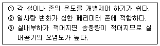
- 정풍량 단일덕트방식
- 변풍량 단일덕트방식
- 패키지방식
- 유인유닛방식
(정답률: 65%)
46. 냉수코일의 냉각부하 147000 kJ/h 이고, 통과풍량은 10000 m3/h, 정면풍속 2m/s 이다. 코일입구공기온도 28℃, 출구 공기온도 15℃ 이며, 코일의 입구냉수온도 7℃, 출구냉수온도 12℃, 열관류율은 2346 kJ/m2h℃ 일 때 코일열수는 얼마인가?(단, 습면보정계수는 1.33, 공기와 냉수의 열교환은 대향류형식이다.)
- 2열
- 3열
- 5열
- 6열
(정답률: 37%)
47. 다음 중 일반적인 덕트의 설계 순서로 옳은 것은? (단, ㉮ 송풍량 결정, ㉯ 취출구ㆍ흡입구 위치 결정, ㉰ 덕트경로 결정, ㉱ 덕트 치수 결정, ㉲ 송풍기 선정이다.)
- ㉮ → ㉯ → ㉰ → ㉱ → ㉲
- ㉮ → ㉰ → ㉱ → ㉯ → ㉲
- ㉲ → ㉮ → ㉰ → ㉱ → ㉯
- ㉲ → ㉮ → ㉯ → ㉰ → ㉱
(정답률: 63%)
48. 다음 습공기 선도(h-x선도)상에서 공기의 상태가 1에서 2로 변할 때 일어나는 현상이 아닌 것은?
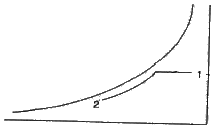
- 건구온도의 감소
- 절대습도 감소
- 습구온도 감소
- 상대습도 감소
(정답률: 53%)
49. 열회수방식 중 공조설비의 에너지 절약기법으로 많이 이용되고 있으며, 외기 도입량이 많고 운전시간이 긴 시설에서 효과가 큰 것은?
- 잠열교환기 방식
- 현열교환기 방식
- 비열교환기 방식
- 전열교환기 방식
(정답률: 74%)
50. 다음 기기 중 열원 설비에 해당하는 것은?
- 히트펌프
- 송풍기
- 팬 코일 유닛
- 공기조화기
(정답률: 81%)
51. 다음 설명 중 옳은 것은?
- 잠열은 0℃의 물을 가열하여 100℃의 증기로 변할 때까지 가하여진 열량이다.
- 잠열은 100℃의 물이 증발하는데 필요한 열량으로서 증기의 압력과는 관계없이 일정하다.
- 임계점에서는 물과 증기의 비체적이 같다.
- 증기의 정적비열은 정압비열보다 항상 크다.
(정답률: 44%)
52. 유리면을 통한 태양복사열량이 달라 질 수 있는 요소가 아닌 것은?
- 건물의 높이
- 차폐의 유무
- 태양입사각
- 계절
(정답률: 61%)
53. 공기조화설비는 공기조화기, 열원장치 등 4대 주요장치로 구성되어 있다. 4대 주요장치의 하나인 공기조화기에 해당되는 것이 아닌 것은?
- 에어필터
- 공기냉각기
- 공기가열기
- 왕복동 압축기
(정답률: 71%)
54. 덕트의 크기를 결정하는 방법이 아닌 것은?
- 등속법
- 등마찰법
- 등중량법
- 정압재취득법
(정답률: 72%)
55. 보일러 출력표시에 대한 내용으로 잘못된 것은?
- 정격출력 : 연속 운전이 가능한 보일러의 능력으로 난방부하, 급탕부하, 배관부하, 예열부하의 합이다.
- 정미출력 : 난방부하, 급탕부하, 예열부하의 합이다.
- 상용출력 : 정격출력에서 예열부하를 뺀 값이다.
- 과부하출력 : 운전초기에 과부하가 발생했을 때는 정격출력의 10~20% 정도 증가해서 운전할 때의 출력으로 한다.
(정답률: 72%)
56. 건구온도 t1=5℃, 상대습도 ψ=80%인 습공기를 공기 가열기를 사용하여 건구온도 t2=43℃가 되는 가열공기 650m3/h를 얻으려고 한다. 이 때 가열에 필요한 열량은 약 얼마인가? (단, 습공기선도를 참고하시오.)
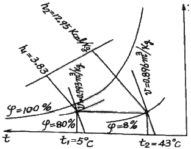
- 7383 kcal/h
- 7475 kcal/h
- 7583 kcal/h
- 7637 kcal/h
(정답률: 47%)
57. 송풍기의 법칙에서 회전속도가 일정하고 직경이 d, 동력이 L인 송풍기의 직경을 d1 으로 크게 했을 때 동력 L1을 나타내는 식은?
- L1=(d1/d)2 L
- L1=(d1/d)3 L
- L1=(d1/d)4 L
- L1=(d1/d)5 L
(정답률: 69%)
58. 냉각탑(cooling tower)에 대한 설명 중 잘못된 것은?
- 어프로치(approach)는 5℃ 정도로 한다.
- 냉각탑은 응축기에서 냉각수가 얻은 열을 공기중에 방출하는 장치이다.
- 쿨링레인지랑 냉각탑에서의 냉각수 입ㆍ출구 수온차이다.
- 보급수량은 순환수량의 15% 정도이다.
(정답률: 59%)
59. 단일덕트 재열방식의 특징으로 적합하지 않은 것은?
- 냉각기에 재열부하가 추가된다.
- 송풍공기량이 증가한다.
- 실별 제어가 가능하다.
- 현열비가 큰 장소에 적합하다.
(정답률: 50%)
60. 냉방부하의 종류 중 현열부하 만을 포함하고 있는 것은?
- 유리로부터의 취득열량
- 극간풍에 의한 열량
- 인체 발생 부하
- 외기도입으로 인한 취득열량
(정답률: 63%)
4과목: 전기제어공학
61.
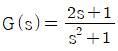
에서 특성 방정식의 근은?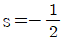
- s=-1
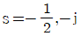
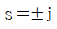
(정답률: 53%)
62. 2개의 SCR로 단상 전파정류하여 100√2 [V]의 직류전압을 얻는데 필요한 1차측 교류전압은 약 몇 [V] 인가?
- 120
- 141
- 157
- 220
(정답률: 28%)
63. 다음 중 온도 보상용으로 사용되는 소자는?
- 서미스터
- 바리스터
- 바랙터다이오드
- 제어다이오드
(정답률: 77%)
64. 60Hz, 15kW, 4극의 3상 유도전동기가 있다. 전부하가 걸렸을 때 슬립이 4%라면, 이때의 2차(회전자)측 동손[kW]은?
- 0.428
- 0.528
- 0.625
- 0.724
(정답률: 51%)
65. 전기자 전류가 100A일 때 50kgㆍm의 토크가 발생하는 전동기가 있다. 전동기의 자계의 세기가 80%로 감소되고 전기자 전류가 120A로 되었다면 토크[kgㆍm]는?
- 39
- 43
- 48
- 52
(정답률: 52%)
66. 변압기에 대한 설명으로 옳지 않은 것은?
- 변압기의 2차측 권선수가 1차측 권선수보다 적은 경우에는 1차측의 전압보다 2차측의 전압이 낮다.
- 변압기의 1차측 전압이 2차측 전압보다 높을 경우, 2차측에 부하가 연결되면, 흐르는 전류는 1차측에서 공급되는 전류값 보다 크다.
- 변압기의 1차측 권선수와 전압, 2차측 권선수와 전압을 이용하여 권수비를 구할 수 있다.
- 변압기의 1차측과 2차측의 권선수가 다를 경우에는 1차측에 인가한 전압의 주파수와 2차측에 나타나는 전압의 주파수는 다르다.
(정답률: 49%)
67. 제어계의 분류에서 엘리베이터에 적용되는 제어 방법은?
- 정치제어
- 추종제어
- 프로그램제어
- 비율제어
(정답률: 81%)
68. 비정현파에서 왜형율(distortion factor)을 나타내는 식은?
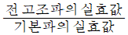
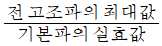
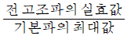
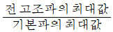
(정답률: 45%)
69. 제동계수 중 최대 초과량이 가장 큰 것은?
- δ=0.5
- δ=1
- δ=2
- δ=3
(정답률: 61%)
70. 열 기전력형 센서에 대한 설명이 아닌 것은?
- 전압 변화용 센서이다.
- 철, 콘스탄탄의 금속을 이용한다.
- 제벡효과(Seebeck effect)를 이용한다.
- 진동 주파수는
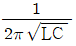
이다.
(정답률: 52%)
71. 그림에서 스위치 S의 개폐에 관계없이 전전류 I가 항상 30A라면 저항 r3와 r4의 값은 몇 [Ω] 인가?
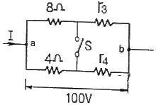
- r3=1, r4=3
- r3=2, r4=1
- r3=3, r4=2
- r3=4, r4=4
(정답률: 68%)
72. 두 대 이상의 변압기를 병렬 운전하고자 할 때 이상적인 조건으로 옳지 않은 것은?
- 용량에 비례해서 전류를 분담할 것
- 각 변압기의 극성이 같을 것
- 변압기 상호간 순환전류가 흐르지 않을 것
- 각 변압기의 손실비가 같을 것
(정답률: 48%)
73. 피드백 제어의 특징에 대한 설명으로 틀린 것은?
- 제어계의 특성을 향상시킬 수 있다.
- 외부 조건의 변화에 대한 영향을 줄일 수 있다.
- 목표값을 정확히 달성할 수 있다.
- 제어량에 변화를 주는 외란의 영향을 받지 않는다.
(정답률: 70%)
74. 논리식 A+BC와 등가인 논리식은?
- AB+AC
- (A+B)(A+C)
- (A+B)C
- (A+C)B
(정답률: 67%)
75. 제어편차가 검출될 때 편차가 변화하는 속도에 비례하여 조작량을 가감하도록 하는 제어로 오차가 커지는 것을 미연에 방지하는 제어동작은?
- ON/OFF 제어 동작
- 미분 제어 동작
- 적분 제어 동작
- 비례 제어 동작
(정답률: 55%)
76. 방사성 위험물을 원격으로 조작하는 인공수(人工手; manipulator)에 사용되는 제어계는?
- 시퀀스 제어
- 서보계
- 자동조정
- 프로세스 제어
(정답률: 64%)
77. 논리식 A=X(X+Y)를 간단히 하면?
- A=X
- A=Y
- A=X+Y
- A=XㆍY
(정답률: 63%)
78. 절연저항 측정 시 가장 적당한 방법은?
- 메거에 의한 방법
- 전압, 전류계에 의한 방법
- 전위차계에 의한 방법
- 더블브리지에 의한 방법
(정답률: 68%)
79. 도체가 대전된 경우 도체의 성질과 전하분포에 대한 설명으로 옳지 않은 것은?
- 전하는 도체 표면에만 존재한다.
- 도체는 등전위이고 표면은 등전위면이다.
- 도체 표면상의 전계는 면에 대하여 수직이다.
- 도체 내부의 전계는 ∞이다.
(정답률: 63%)
80. 자동제어계의 응답 중 입력과 출력사이의 최대 편차량은?
- 오차
- 오버슈트
- 외란
- 감쇄비
(정답률: 76%)
5과목: 배관일반
81. 강관 접합법에 해당되지 않는 것은?
- 나사접합
- 플랜지접합
- 용접접합
- 몰코접합
(정답률: 71%)
82. 신축 이음쇠의 종류에 해당되지 않는 것은?
- 벨로스형
- 플랜지형
- 루프형
- 슬리브형
(정답률: 74%)
83. 온수난방 배관에서 역귀환방식을 채택하는 목적으로 적합한 것은?
- 배관의 신축을 흡수하기 위하여
- 온수가 식지 않게 하기 위하여
- 온수의 유량분배를 균일하게 하기 위하여
- 배관길이를 짧게 하기 위하여
(정답률: 72%)
84. 급탕의 온도는 사용온도에 따라 각각 다르나 게산을 위하여 기준온도로 환산하여 급탕의 양을 표시하고 있다. 이때 환산의 온도로 맞는 것은?
- 40℃
- 50℃
- 60℃
- 70℃
(정답률: 60%)
85. 강관의 나사이음 시 관을 절단한 후 관 단면의 안쪽에 생기는 거스러미를 제거할 때 사용하는 공구는?
- 파이프 바이스
- 파이프 리머
- 파이프 렌치
- 파이프 커터
(정답률: 77%)
86. 증기트랩에 관한 설명으로서 맞는 것은?
- 응축수나 공기가 자동적으로 환수관에 배출되며, 실로폰 트랩, 방열기 트랩이라고도 하는 트랩은 플로트 트랩이다.
- 열동식 트랩은 고압, 중압의 증기관에 적합하며, 환수관을 트랩보다 위쪽에 배관할 수도 있고, 형식에 따라 상향식과 하향식이 있다.
- 버킷 트랩은 구조상 공기를 함께 배출하지 못하지만 다량의 응축수를 처리하는데 적합하며, 다량트랩이라고 한다.
- 고압, 중압, 저압에 사용되며 작동 시 구조상 증기가 약간 새는 결점이 있는 것이 충격식 트랩이다.
(정답률: 49%)
87. 보온재의 구비조건 중 틀린 것은?
- 열전도율이 적을 것
- 균열 신축이 적을 것
- 내식성 및 내열성이 있을 것
- 비중이 크고 흡습성이 클 것
(정답률: 75%)
88. 도시가스 배관 시 배관이 움직이지 않도록 관지름 13~33mm 미만은 몇 m 마다 고정 장치를 설치해야 하는가?
- 1m
- 2m
- 3m
- 4m
(정답률: 77%)
89. 열교환기 입구에 설치하여 탱크 내의 온도에 따라 밸브를 개폐하며, 열매의 유입량을 조절하여 탱크 내의 온도를 설정범위로 유지시키는 밸브는?
- 감압 밸브
- 플랩 밸브
- 바이패스 밸브
- 온도조절 밸브
(정답률: 68%)
90. 급탕 배관에서 설치되는 팽창관의 설치위치로 적당한 것은?
- 순환펌프와 가열장치 사이
- 급탕관과 환수관 사이
- 가열장치와 고가탱크 사이
- 반탕관과 순환펌프 사이
(정답률: 61%)
91. 우수배관 시공 시 고려할 사항으로 틀린 것은?
- 우수배관은 온도에 따른 관의 신축에 대응하기 위해 오프셋 부분을 둔다.
- 우수 수직관은 건물 내부에 배관하는 경우와 건물 외벽에 배관하는 경우가 있다.
- 우수 수직관은 다른 기구의 배수관과 접속시켜 통기관으로 사용할 수 있다.
- 우수 수평관을 다른 배수관과 접속할 때에는 우수배수관을 통해 하수가스가 발생되지 않도록 U자 트랩을 설치한다.
(정답률: 61%)
92. 냉매 배관 재료 중 암모니아를 냉매로 사용하는 냉동설비에 일반적으로 많이 사용하는 것은?
- 동, 동합금
- 아연, 주석
- 철, 강
- 크롬, 니켈 합금
(정답률: 67%)
93. 각 수전에 급수공급이 일반적으로 하향식에 의해 공급되는 급수방식은?
- 수도 직결식
- 옥상 탱크식
- 압력 탱크식
- 부스터 방식
(정답률: 70%)
94. 관경 300mm, 배관길이 500m의 중압 가스수송관에서 AㆍB점의 게이지 압력이 3kgf/cm2, 2kgf/cm2인 경우 가스유량은 약 얼마인가? (단, 가스 비중 0.64, 유량계수 52.31로 한다.)
- 10238 m3/h
- 2⑤83 m3/h
- 38315 m3/h
- 40153 m3/h
(정답률: 38%)
95. 고압 배관용 탄소 강관에 대한 설명으로 틀린 것은?
- 100 kgf/cm2이상에 사용하는 고압용 강관이다.
- KS 규격기호로 SPPH라고 표시한다.
- 치수는 호칭지름 × 호칭두께(Sch No) × 바깥지름으로 표시하며, 림드강을 사용하여 만든다.
- 350℃ 이하에서 내연기관용 연료분사관, 화학공업의 고압배관용으로 사용된다.
(정답률: 65%)
96. 배수관에서 자정작용을 위해 필요한 최소유속으로 적당한 것은?
- 0.1m/s
- 0.2m/s
- 0.4m/s
- 0.6m/s
(정답률: 42%)
97. 급수에 사용되는 물을 탄산칼슘의 함유량에 따라 연수와 경수로 구분된다. 경수사용 시 발생될 수 있는 현상으로 틀린 것은?
- 비누거품의 발생이 좋다.
- 보일러용수로 사용 시 내면에 관석이 많이 발생한다.
- 전열효율이 저하하고 과열의 원인이 된다.
- 보일러의 수명이 단축된다.
(정답률: 77%)
98. 기계배기와 기계급기의 조합에 의한 환기방법으로 일반적으로 외기를 정화하기 위한 에어필터를 필요로 하는 환기법은?
- 1종환기
- 2종환기
- 3종환기
- 4종환기
(정답률: 72%)
99. 댐퍼의 종류에 관련된 내용이다. 서로 그 관련된 내용이 틀린 것은?
- 풍량조절댐퍼(VD) : 버터플라이댐퍼
- 방화댐퍼(FD) : 루버형댐퍼
- 방연댐퍼(SD) : 연기감지기
- 방연방화댐퍼(SFD) : 스프릿댐퍼
(정답률: 63%)
100. 가스배관 경로 선정 시 고려하여야 할 내용으로 적당하지 않은 것은?
- 최단거리로 할 것
- 구부러지거나 오르내림을 적게 할 것
- 가능한 은폐매설을 할 것
- 가능한 옥외에 설치할 것
(정답률: 72%)